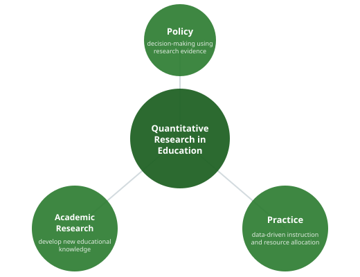

In Module 1, we observed sources of quantitative data that arise in educational contexts as a function of administrative practices (e.g., attendance, per-pupil spending) and policy (e.g., standardized assessment scores used for state accountability). In Module 2, we worked with statistical tools to summarize information about the distributions of variables contained in these quantitative datasets.
How do we use analytic tools to turn this data into organized insight for policy and practice? This is the task of research: a systematic process by which we develop new knowledge from evidence.
summarize. Make a histogram. Ask: what does this variable look like? The goal is familiarity with the data.

• What are attendance patterns across elementary schools in a district?
• How do teacher retention rates vary by school locale (urban, suburban, rural)?
• How have patterns of school segregation changed in the past decade?
• Does participation in a high-dosage tutoring program improve students’ math achievement?
• What is the effect of reducing class size on teacher job satisfaction?
• Does sports participation influence student attendance?
The question asks what happened to graduation rates over time. It documents a trend. It does not ask why the rate changed or whether a specific policy or program caused the change.
If the administrator asked “Did our new advising program increase the graduation rate?” — that would be a causal question, because it claims a specific intervention produced a specific outcome.
scale_score is a scale score for each student-subject-year. In the Florida DOE data, meanread is an average reading scale score at the district-grade level.
For comparing averages across districts, scale scores are the right tool. They are continuous, preserve the full range of variation, and allow you to compute meaningful means and make precise comparisons.
Proficiency levels would tell you the percentage of students at each level, which is a different (and also useful) comparison — but it does not give you an average achievement measure.
This is exactly the kind of analysis you will do in Module 4 with the Gatorville and Florida statewide data.